.jpg)
NIKAHO ART PROJECT 2026にかほ芸術登竜紋
CONCEPT — MIMICRY ／ WORK PROPOSAL作品解説
RESIN
MORTAR
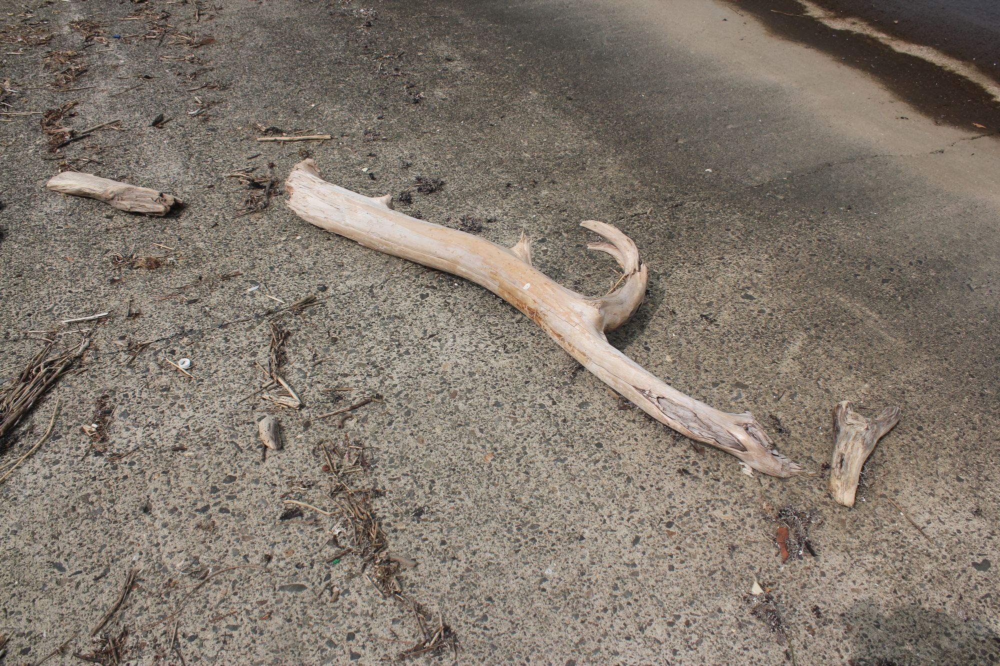
この流木は、まだ作品ではない。
擬態のインスタレーションミミクリ
MimicrySITE-SPECIFIC · MIMETIC SCULPTURE
- SCULPTURE
- INSTALLATION
- PHOTOGRAPH / FILM
津田翔一属：地 — ATELIER SH01
TSUDA SHOICHI / NIKAHO 20262026.09
作品解説をとばして、PHASE 1 へ進む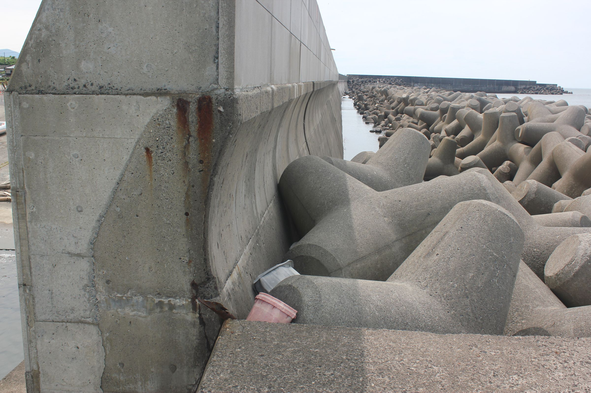
§01STATEMENT
風景に擬態し、
気づいた人だけが
発見する
— hidden in plain sight
にかほの海岸・河原・田畑に転がる石、流木、漂着物と、ほとんど見分けがつかない彫刻をつくり、実際にそれらがありそうな場所へそっと置く。
鑑賞者は気づかぬまま通り過ぎ、かたわらの小さなキャプションプレートを見つけた瞬間、目の前の風景そのものが「作品かもしれない」という眼差しに反転する。
防波堤の足元には、流木、ロープ、樹脂のバケツ、錆びた鉄筋が、波に運ばれ、同じ灰色に褪せながら寄り集まっている。自然物と人工物の境界は、潮と時間によってすでに曖昧になっている。《ミミクリ》は、その曖昧さのなかに一滴の「つくられたもの」を紛れ込ませる試みである。
作品は見られるために主張しない。むしろ、見過ごされることを前提にしている。だからこそ、ひとたび気づいた人の眼には、その場所のすべての石と流木が、何かを語り出す可能性を帯びはじめる。《ミミクリ》は、住民から聞き取った物語の残る場所で、にかほの風景を〈読む〉ためのひとつの小さな鍵となる。
見過ごされた数だけ、風景は守られ、
気づかれた一度で、風景は作品へと反転する。
- MIMICRY 擬態
- DRIFTWOOD 流木
- FLOTSAM 漂着物
- WEATHERING 風化
- 〈いと〉
CONCEPT — MIMICRY
制作方法と、設置の考え方
.JPG)
.JPG)
01制作方法
- 石・流木・漂着物の質感（苔、地衣類、風化、退色）を型取りと手彩色で精密に再現
- 素材は陶・樹脂・モルタルなど、屋外の気候に馴染み経年変化に耐えるものを選定
- 自然物だけでなく、護岸のがれきに紛れる生活道具の残骸など人工物への擬態も試みる
02設置の考え方
- 物語に紐づく場所（語り手の家の裏庭、伝承の残る河原など）を優先的に選ぶ
- 傍らに作品名・制作年・「属：地」を刻んだ小さなプレートを添える
- 会場（にかほっと）周辺にも1〜2点を試験設置し、偶然の出会いを設計する
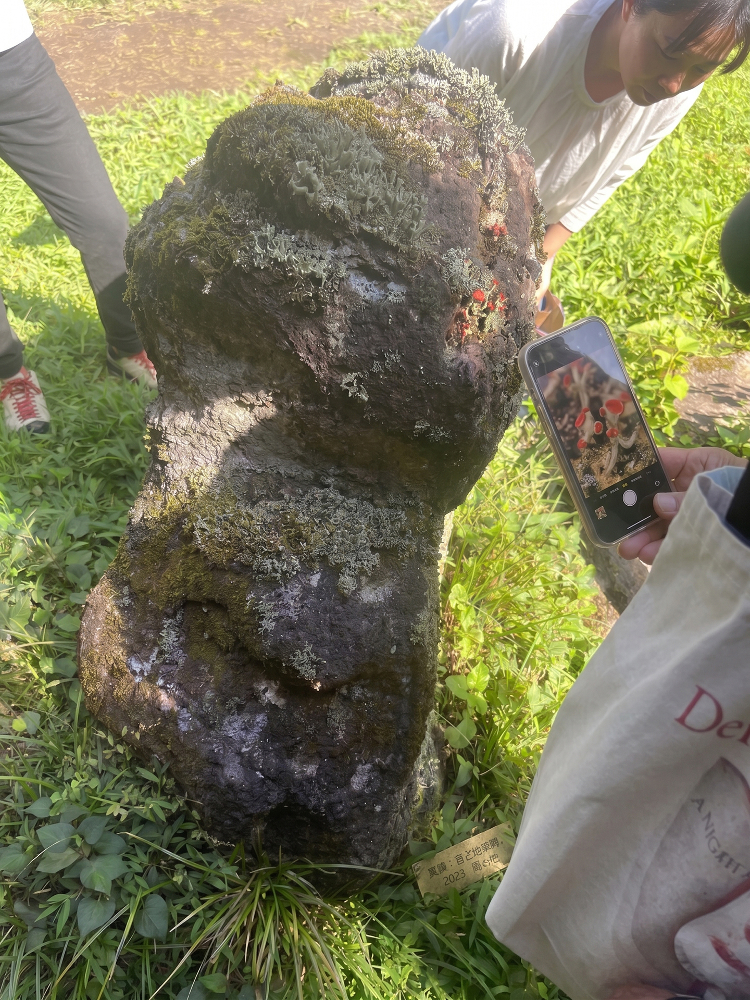
§02STRUCTURE
擬態の三者構造と、
眼差しの反転
モデル → 擬態者 → 受け手
生物学でいう擬態（mimicry）は、〈モデル〉〈擬態者〉〈信号の受け手〉の三者によって成り立つ。《ミミクリ》はこの構造を風景のなかに移植し、最後にもうひとつの要素——キャプションプレート——を加えることで、関係そのものをひっくり返す。
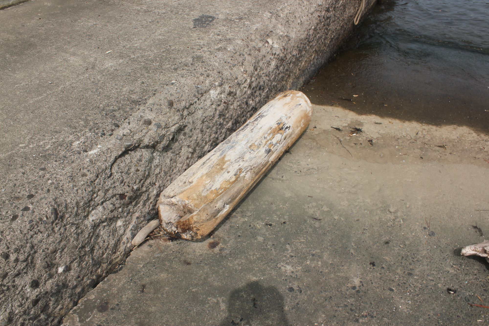
モデル
MODEL
にかほの石・流木・漂着物
RESIN
MORTAR
擬態者
MIMIC
陶・樹脂・モルタルの彫刻
受け手
RECEIVER
通りがかる人・鑑賞者
-
01
PASS BY
通過
彫刻は流木や石として風景に溶け、多くの人は気づかずに通り過ぎる。
-
02
NOTICE
発見
足元の小さなプレートに目が留まり、見慣れた場所に違和が生まれる。
-
03
REVERSE
反転
どれが作品か分からなくなる。本物の流木までもが、つくられたものに見えはじめる。
-
04
CARRY
持ち帰り
作品を離れても眼差しは残る。帰り道の浜が、読まれるべき風景になる。
§03FIELD
採集地 —
にかほの港と浜
field notes, Nikaho coast
フィールドワークで歩いた港では、斑点状の錆に覆われた車が獣の皮膚のように見え、古い絨毯をかけられた網の列が眠る生き物のように並んでいた。草に呑まれた祠は、人の営みが植物へと還っていく途中にある。《ミミクリ》は、この土地がすでに行っている擬態に、そっと手を添える。
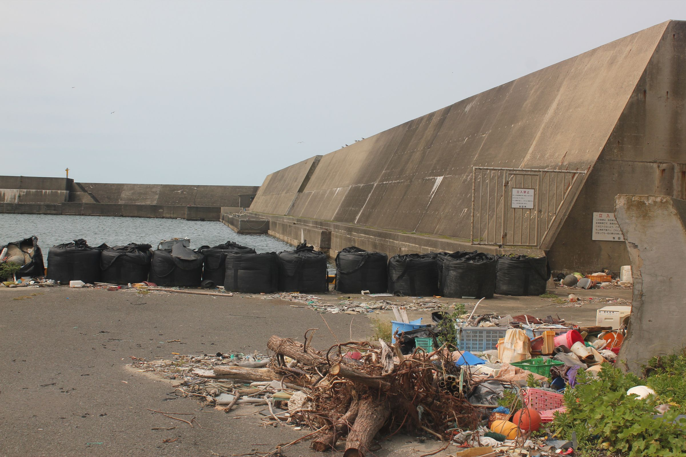
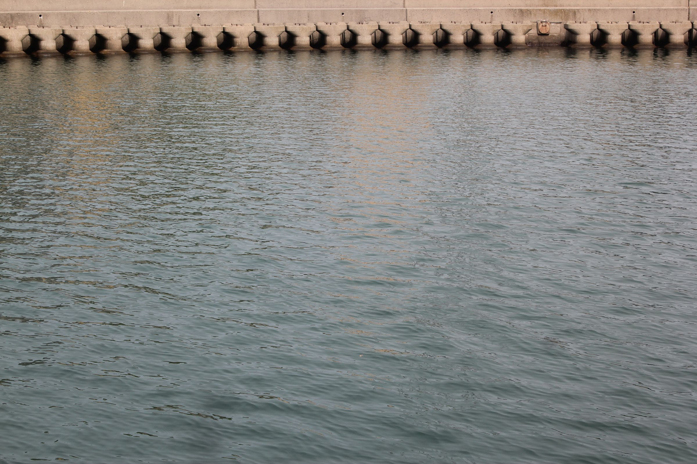
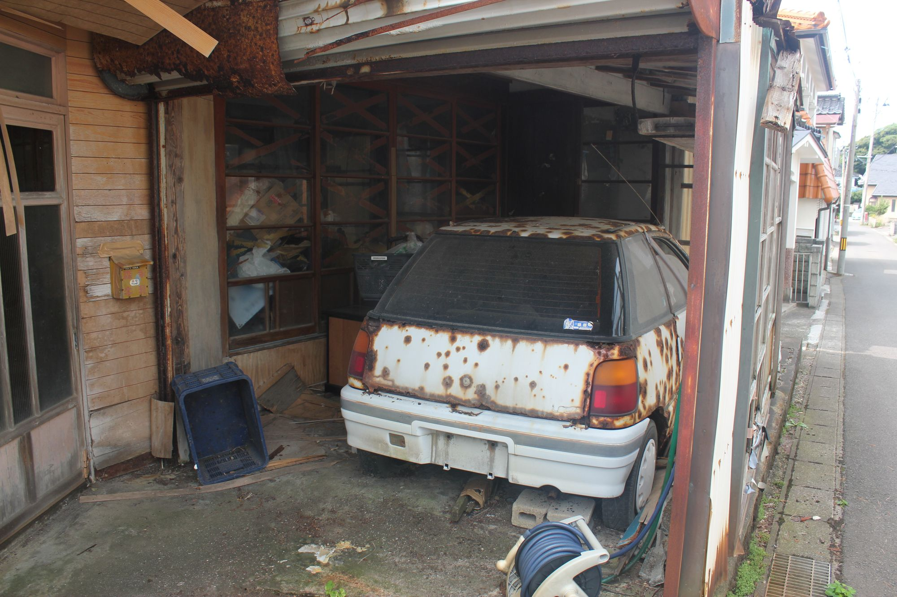
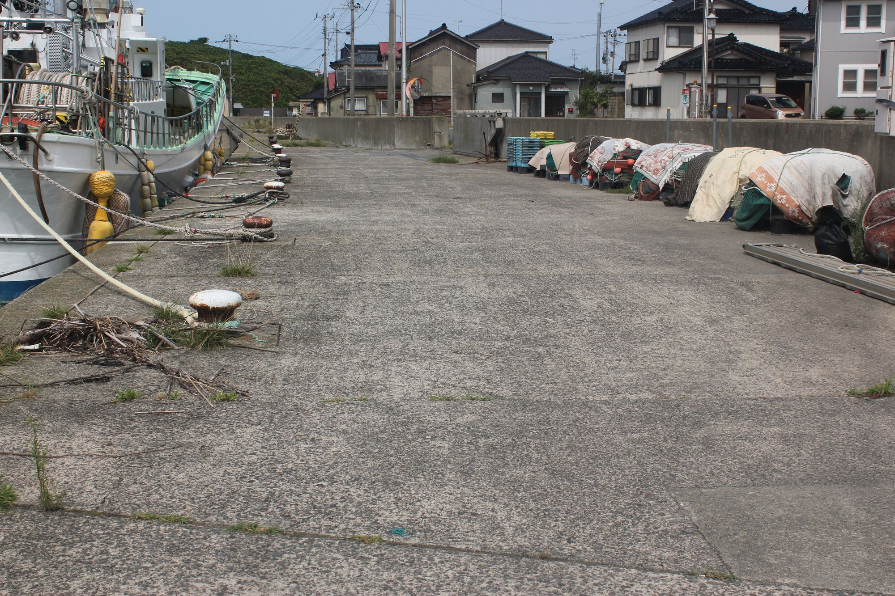
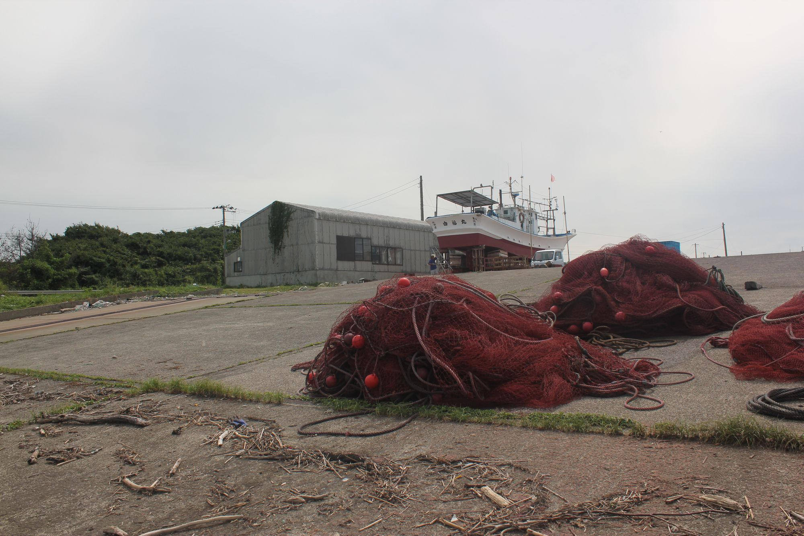
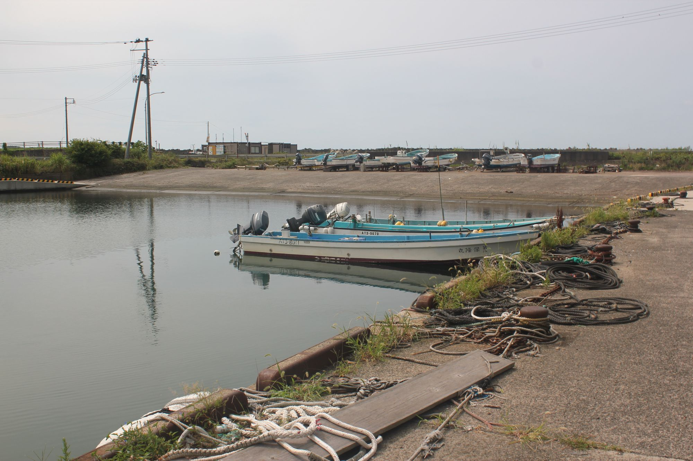
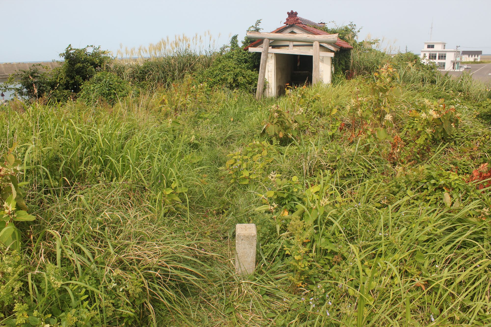
港では、擬態は
すでに始まっている。
§04SPECIMENS — I
擬態のモデル図鑑 I
catalogue of models — natural
現地で記録した「擬態の手本」となる事物。各項目に、再現すべき質感要素と擬態素材の候補、再現難度を記す。I では主に自然物（流木）を扱う。
枝角の流木antler-shaped driftwood
獣の角のように枝分かれした白い流木。波に磨かれた滑らかな面と、裂けた芯の荒々しさが同居する。単体で置いても成立する、シリーズの象徴的なモデル。
- TEXTURE
- 漂白 ／ 乾燥割れ ／ 芯の露出 ／ 砂の付着
- MATERIAL
- 陶（焼締）＋手彩色
- DIFFICULTY
護岸に寄る円柱材log against the seawall
護岸の角に打ち寄せられた丸太。樹皮が剥がれ、黄変と黒い斑点が混じる。コンクリートの粗い骨材との対比が、置き場所ごと作品の一部になる。
- TEXTURE
- 樹皮の剥離 ／ 黄変 ／ 黒カビ斑 ／ 擦過痕
- MATERIAL
- 陶（中空成形）／樹脂注型＋砂
- DIFFICULTY
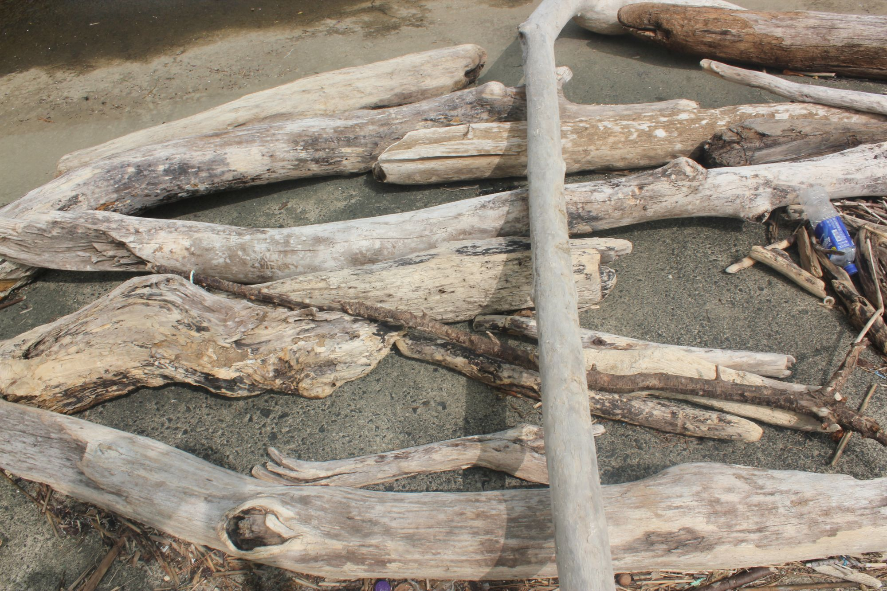
M-03流木の群れa drift of driftwood
打ち上げられた流木が折り重なる群れ。群のなかにたった一本だけ作品を紛れ込ませる、もっとも発見の難しい設置形式を想定する。
- TEXTURE
- 灰白の退色 ／ 節穴 ／ 樹皮の残存 ／ ペットボトル等の混入
- MATERIAL
- 陶（焼締・還元）＋手彩色
- DIFFICULTY
.JPG) M-04
M-04ロープを抱く流木driftwood bound by rope
草地に残された流木の塊に、退色した漁具のロープが絡む。自然物と人工物が一体化した、「すでに誰かが組んだような」偶然の彫刻。
- TEXTURE
- 繊維の解れ ／ 青緑の退色 ／ 砂に埋もれる基部
- MATERIAL
- 陶の流木＋採取ロープ（実物）の組み合わせ
- DIFFICULTY
§04SPECIMENS — II
擬態のモデル図鑑 II
catalogue of models — artificial
II では人工物への擬態を扱う。陶で樹脂や金属の質感を写すという「素材の擬態」によって、護岸のがれきに紛れる生活道具の残骸をつくる。
M-05テトラに挟まる桃色のバケツa wedged pink bucket
波に押し込まれ、楕円に歪んだ樹脂のバケツ。陶と釉薬で、褪せたプラスチックの艶と柔らかな変形を再現する。人工物への擬態の中心となるモデル。
- TEXTURE
- 退色した樹脂 ／ 変形 ／ 擦り傷 ／ 縁の欠け
- MATERIAL
- 陶（型押し成形）＋半艶釉
- DIFFICULTY
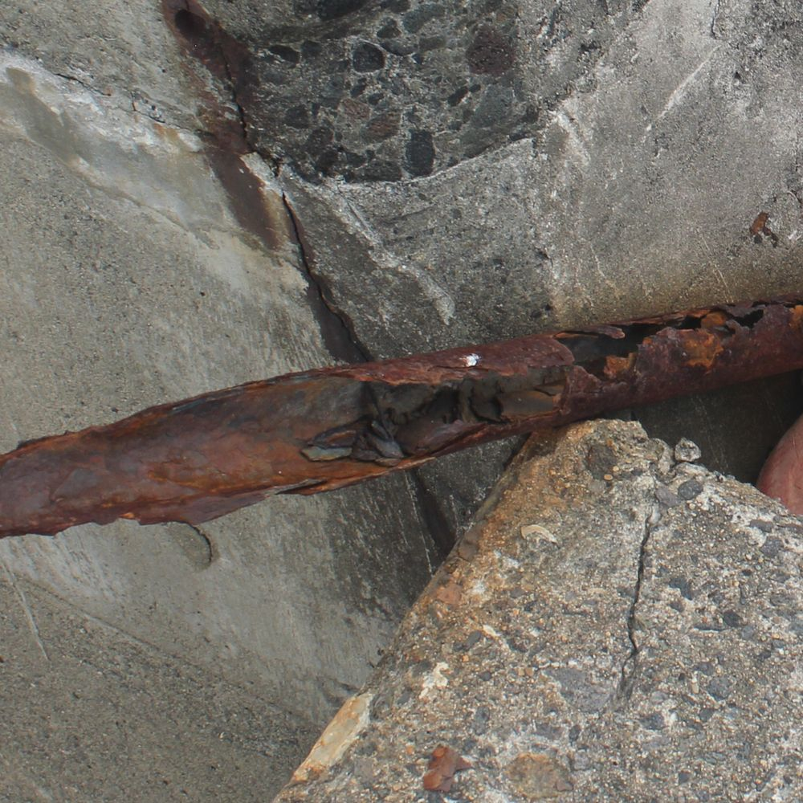
M-06層状に剥がれる鉄筋delaminating rebar
護岸の継ぎ目から突き出した、錆で層状に剥離した鉄筋。細長く、コンクリートの割れ目に差し込むように設置できる。
- TEXTURE
- 層状の錆 ／ 赤褐色〜黒 ／ 錆汁の垂れ跡
- MATERIAL
- 陶＋酸化鉄釉／モルタル芯材
- DIFFICULTY
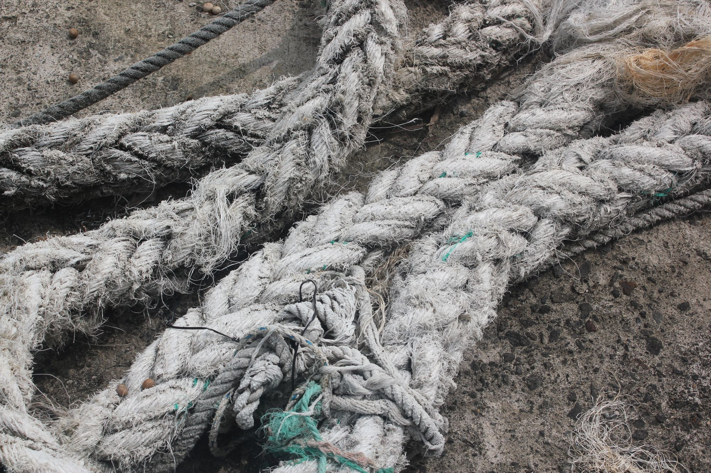
M-07毛羽立つ係留ロープfrayed mooring rope
使い込まれた太い係留ロープ。無数の繊維が毛羽立ち、塩で白く粉を吹く。「硬いロープ」として陶で写すか、樹脂と繊維で柔らかさを残すかを試作で比較する。
- TEXTURE
- 繊維の毛羽 ／ 塩の白化 ／ 緑の撚り糸
- MATERIAL
- 陶（紐作り）／樹脂＋繊維（比較試作）
- DIFFICULTY
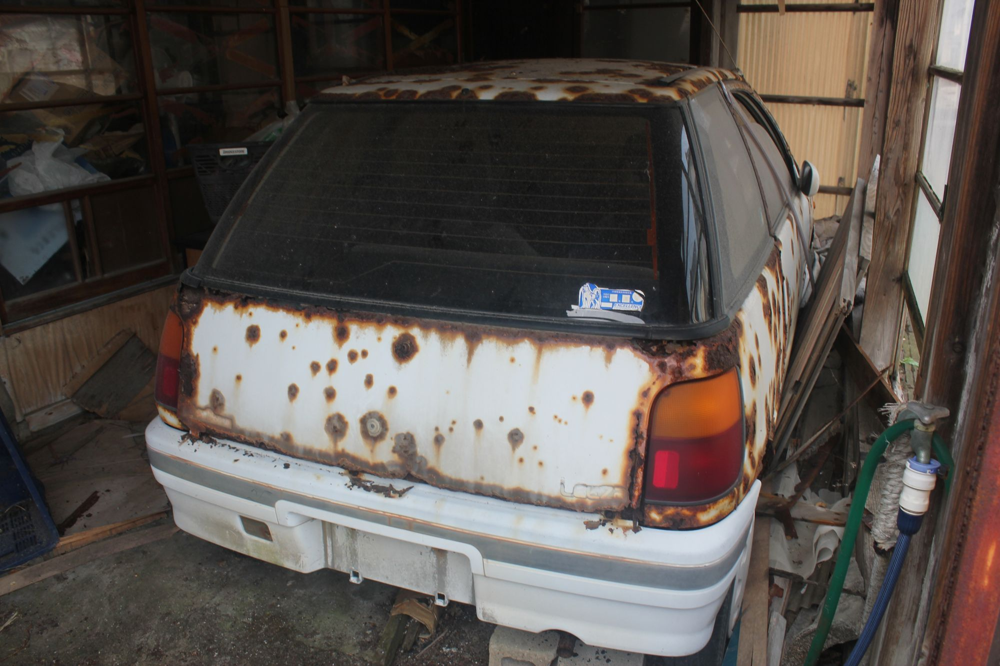
M-08斑点錆の皮膚rust-spotted skin
白い車体に広がる同心円状の錆の斑紋。立体としてではなく「表層の擬態」の見本として、陶板のテクスチャ試験や彩色のリファレンスに用いる。
- TEXTURE
- 同心円の錆 ／ 塗膜の浮き ／ 垂れ跡
- MATERIAL
- 陶板テストピース（表面見本）
- DIFFICULTY
§05PROCESS
見分けがつか
なくなるまで
method & materials
石・流木・漂着物の質感——苔、地衣類、風化、退色——を、型取りと手彩色によって精密に再現する。目標は「似ている」ことではなく、「その場所で見分けがつかない」ことにある。
-
01RECORD
採取・記録
モデルを実測し、全周を撮影（フォトグラメトリ）。色・光沢・付着物の見本を採取し、置かれていた環境も記録する。
-
02MOLD
型取り
シリコーンで表面の凹凸を型取りする。持ち出せないモデルは、記録をもとに粘土で再造形する。
-
03FORM
原型・成形
陶土の型押し、または樹脂・モルタルを注型。屋外での重量と強度を考慮し、中空・芯材の構造を決める。
-
04FIRE / CURE
焼成・硬化
焼締や還元焼成で灰色の地肌を得る。乾燥割れや歪みも、風化の痕跡として意図的に残す。
-
05WEATHER
手彩色・風化
顔料・釉・現地の砂や土を重ね、苔、地衣類、錆、退色を描き込む。筆致が見えないことを基準とする。
-
06FIELD TEST
屋外経年テスト
現地に仮設置し、日照・湿気・雨による質感の変化を観察。モデルとの並置で最終調整を行う。
MATERIALS
| 素材 | 質感の再現 | 耐候性 | 重量・固定 | 向くモデル |
|---|---|---|---|---|
| 陶CERAMIC | ◎風化した流木・石の硬質感。釉で樹脂の艶も写せる | ◎退色しない。凍結による割れに注意 | 重く、動かされにくい | M-01／03／05／06 |
| 樹脂RESIN | ◎細部・繊維・薄い縁の再現に優れる | △紫外線で黄変。表面保護が必要 | 軽いため固定・重りが必要 | M-02／07 |
| モルタルMORTAR | ○護岸のがれき・コンクリート片に最適 | ◎屋外で最も安定 | 重く、据え置き向き | 護岸片・M-06 芯材 |
LOCAL MATERIAL — 土地の素材を混ぜる
長野・左美都で在地の土を用いた陶（左美都焼）を手がけてきた経験を応用し、にかほの浜の砂や土を陶土・彩色に混和する可能性を検討する。擬態の精度を、素材そのものの出自によって高める試み。
§06PLACEMENT
MIMICRY No.04 — 2026
ロープを抱く流木 陶、手彩色、採取ロープ 属：地物語の残る場所へ、そっと置く
where the work is left
- 1
物語に紐づく場所を選ぶ
語り手の家の裏庭、伝承の残る河原など、ヒアリングで聞いた物語と結びつく場所を優先する。作品は、土地の記憶の結び目〈いと〉を示す目印になる。
- 2
小さなプレートを添える
傍らに作品名・制作年・「属：地」を刻んだプレートを置く。プレートは発見の唯一の手がかりであり、眼差しを反転させる装置である。
- 3
偶然の出会いを設計する
会場（にかほっと）周辺にも1〜2点を試験設置し、来場者が気づかぬまま通り過ぎる仕掛けをつくる。
CANDIDATE SITES 設置候補地
- 語り手の家の裏庭STORY / YARD
- 伝承の残る河原LEGEND / RIVERBED
- 浜ギク53 周辺FARM INN
- 元滝伏流水 周辺SPRING
- にかほっと 周辺VENUE / 1–2 WORKS
属：地
作品が作者ではなく、土地の側に属していることを示す表記。作品名・制作年とともにプレートに刻む。
PLATE
プレートの仕様
手のひらほどの小さな陶板（約90×55mm想定）。作品名・制作年・「属：地」を刻み、風景を乱さない色で仕上げる。
SETTING
据え置きの方式
地面に穴を開けず、重量と地形で安定させる。会期後は回収し、設置前の状態に戻せることを原則とする。
RECORD
地点の記録
設置地点ごとに位置・日付・周囲の環境を記録し、定点撮影とあわせて展示と答え合わせの地図に用いる。
§07FORMS & EXHIBITION
三つの形式で、擬態を示す
sculpture · installation · photograph / film
01 — SCULPTURE / CERAMIC
彫刻・陶
モデル図鑑をもとに制作する擬態彫刻そのもの。陶を中心に、樹脂・モルタルを適材適所で用いる。手に取ったときに初めて重さや温度で違いが分かる精度を目指す。
02 — INSTALLATION
インスタレーション
彫刻を実景に置く行為と、その場所・プレート・通りがかる人を含めた関係の全体が作品となる。回収可能な据え置き方式を基本とする。
03 — PHOTOGRAPH / FILM
写真・映像
設置地点の定点観測によって、作品が風景に馴染んでいく時間と、人が通り過ぎていく時間を記録する。人物が特定されない画角で撮影する。
制作発表展示会 — にかほっと
2026.12.14 — 12.19 ／ TALK 12.20PLAN — 予定※ まだ構想段階です。展示の構成・点数・配置は未確定で、制作の進み具合や会場・地権者との調整により変わります。
- A
どちらが作品か — 並置のテーブル
採取した本物の流木と擬態彫刻を、無記名で並べる。答えは台の裏に。
- B
定点記録の写真・映像
設置地点ごとの経過と、通り過ぎる時間を上映・展示。
- C
モデル図鑑と制作プロセス
質感記録、型、テストピース、候補地の地図を展示。
- D
会場周辺の実景に1〜2点
入館時には明かさず、出口で「答え合わせの地図」を手渡す。
§08SCHEDULE & CARE
ミミクリの制作工程
from field record to final placement
質感記録・原型サンプル試作
現地の石・流木・生活道具の質感を記録し、原型サンプルを試作。設置候補地を絞り込み、地権者・管理者へ許可を打診する。
試作原型の公開・質感の確認
住民に再現度を見てもらい、設置候補地（語り手の裏庭・河原など）の意向を確認。地権者につながる住民の紹介を依頼する。
型取り・原型製作
候補地の最終許可を取得し、造形に着手する。
質感仕上げ
苔・風化・退色の再現。会場の下見と展示プランの確定。
現地設置テスト
屋外で日照・湿気による質感変化を観察し、微調整に反映する。
最終設置・プレート取付
最終設置とキャプションプレートの取付、搬入準備。
展示・トークイベント
館内の記録・並置展示と会場周辺の実景設置。トークでは物語から擬態への翻訳プロセスを語る。
経過観察の報告
設置後の変化を記録として共有し、継続設置か回収かを判断する。
CARE 屋外設置のための配慮
01
許可の先行取得
候補地ごとに管理者・地権者へ説明し、設置前に許可を得る。
02
劣化への備え
天候による変化を試験で把握し、耐候性のある素材と表面保護を選ぶ。
03
盗難・移動
重量のある素材と目立たない固定で、持ち去りや移動に備える。
04
ごみとして回収される可能性
漂着物に似せるため、清掃活動や漁協などへ事前に周知する。
05
安全
通行や作業の妨げにならない位置・形状を選び、鋭利な部分をつくらない。
06
回収可能な据え置き
地面を傷つけない据え置き方式を基本とし、会期後は回収する。
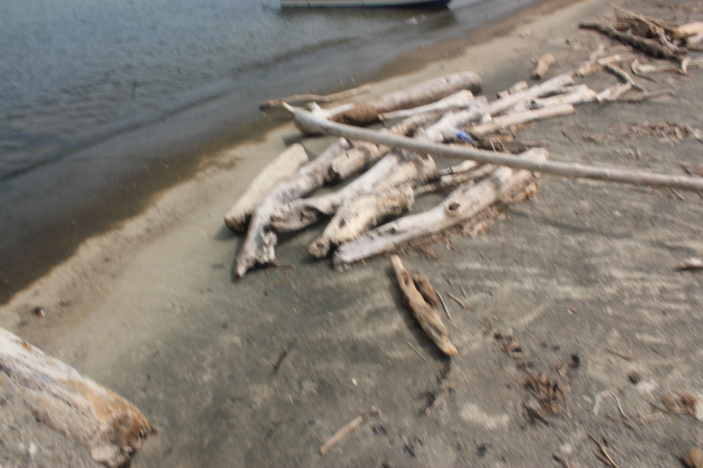
MIMICRY — 擬態のインスタレーション
気づかれないことを、恐れない。気づいた人の眼に、風景がひらく。
この流木の群れのどこかに、いつか作品が紛れ込む。にかほの浜を歩く誰かが、足元の小さなプレートに気づく日のために。
ARTIST
津田 翔一Tsuda Shoichi / Atelier SH01
sh012da.github.io/sh01/
PROGRAM
- にかほ芸術登竜紋
- 2026
- 制作発表展示会
- 2026.12.14 — 12.19
- トークイベント
- 2026.12.20 ／ にかほっと
.JPG)
.JPG)
.JPG)